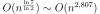

Classes¶
Imaginons qu’une banque détienne un fichier contenant des informations sur ses clients et qu’il soit impossible pour un client d’avoir accès directement à ces informations. Toutefois, il lui est en théorie possible de demander à son banquier quelles sont les informations le concernant détenues par sa banque. Il est en théorie également possible de les rectifier s’il estime qu’elles sont incorrectes.
On peut comparer cette banque à un objet qui possède des informations et des moyens permettant de lire ces informations et de les modifier. Vu de l’extérieur, cette banque cache son fonctionnement interne et les informations dont elle dispose, mais propose des services à ses utilisateurs.
On peut considérer la banque comme un objet au sens informatique. Ce terme désigne une entité possédant des données et des méthodes permettant de les manipuler. Plus concrètement, une classe est un assemblage de variables appelées attributs et de fonctions appelées méthodes. L’ensemble des propriétés associées aux classes est regroupé sous la désignation de programmation objet.
Présentation des classes : méthodes et attributs¶
Définition, déclaration¶
Définition D1 : classe
Une classe est un ensemble incluant des variables ou attributs et des fonctions ou méthodes. Les attributs sont des variables accessibles depuis toute méthode de la classe où elles sont définies. En python, les classes sont des types modifiables.
Syntaxe S1 : Déclaration d’une classe
class nom_classe :
# corps de la classe
# ...
Le corps d’une classe peut être vide, inclure des variables ou attributs, des fonctions ou méthodes. Il est en tout cas indenté de façon à indiquer à l’interpréteur python les lignes qui forment le corps de la classe.
Les classes sont l’unique moyen en langage python de définir de nouveaux types propres à celui qui programme. Il n’existe pas de type « matrice » ou de type « graphe » en langage python qui soit prédéfini. Il est néanmoins possible de les définir au moyen des classes. Une matrice est par exemple un objet qui inclut les attributs suivant : le nombre de lignes, le nombre de colonnes, les coefficients de la matrice. Cette matrice inclut aussi des méthodes comme des opérations entre deux matrices telles que l’addition, la soustraction, la multiplication ou des opérations sur elle-même comme l’inversion, la transposition, la diagonalisation.
Cette liste n’est pas exhaustive, elle illustre ce que peut être une classe « matrice » - représentation informatique d’un objet « matrice » -, un type complexe incluant des informations de types variés (entier pour les dimensions, réels pour les coefficients), et des méthodes propres à cet objet, capables de manipuler ces informations.
Il est tout-à-fait possible de se passer des classes pour rédiger un programme informatique. Leur utilisation améliore néanmoins sa présentation et la compréhension qu’on peut en avoir. Bien souvent, ceux qui passent d’un langage uniquement fonctionnel à un langage objet ne font pas marche arrière. L”instantiation se fait selon le schéma suivant :
Syntaxe S2 : Instanciation d’une classe
cl = nom_classe()
La création d’une variable de type objet est identique à
celle des types standards du langage python : elle passe
par une simple affectation. On appelle aussi cl une instance
de la classe nom_classe.
Cette syntaxe est identique à la syntaxe d’appel d’une fonction. La création d’une instance peut également faire intervenir des paramètres (voir paragraphe Opérateurs). Le terme instance va de paire avec le terme classe :
Définition D2 : instantiaion
Une instance d’une classe C désigne une variable de type C.
Le terme instance ne s’applique qu’aux variables dont le type est une classe.
L’exemple suivant permet de définir une classe vide.
Le mot-clé pass permet de préciser que le corps
de la classe ne contient rien.
<<<
class classe_vide:
pass
>>>
Il est tout de même possible de définir une instance de la
classe classe_vide simplement par l’instruction suivante :
<<<
class classe_vide:
pass
cl = classe_vide()
>>>
Dans l’exemple précédent, la variable cl n’est pas de type
exemple_classe mais de type instance comme le montre la ligne suivante :
<<<
class classe_vide:
pass
cl = classe_vide()
print(type(cl)) # affiche <type 'instance'>
>>>
<class 'sphinx_runpython.runpython.sphinx_runpython_extension.run_python_script_139915485306944.<locals>.classe_vide'>
Pour savoir si une variable est une instance d’une classe
donnée, il faut utiliser la fonction isinstance :
<<<
class classe_vide:
pass
cl = classe_vide()
print(type(cl)) # affiche <type 'instance'>
print(isinstance(cl, classe_vide)) # affiche True
>>>
<class 'sphinx_runpython.runpython.sphinx_runpython_extension.run_python_script_139915484019520.<locals>.classe_vide'>
True
Méthodes¶
Définition D3 : méthode
Les méthodes sont des fonctions qui sont associées de manière explicite à une classe. Elles ont comme particularité un accès privilégié aux données de la classe elle-même.
Ces données ou attributs sont définis plus loin. Les méthodes sont en fait des fonctions pour lesquelles la liste des paramètres contient obligatoirement un paramètre explicite qui est l’instance de la classe à laquelle cette méthode est associée. Ce paramètre est le moyen d’accéder aux données de la classe.
Syntaxe S3 : Déclaration d’une méthode
class nom_classe :
def nom_methode(self, param_1, ..., param_n):
# corps de la méthode...
A part le premier paramètre qui doit de préférence s’appeler self,
la syntaxe de définition d’une méthode ressemble en tout point à celle
d’une fonction. Le corps de la méthode est indenté par rapport à la
déclaration de la méthode, elle-même indentée par rapport à
la déclaration de la classe. Comme une fonction,
une méthode suppose que les arguments qu’elle reçoit existe,
y compris self. On écrit la méthode en supposant qu’un
object existe qu’on nomme self.
L’appel à cette méthode obéit à la syntaxe qui suit :
Syntaxe S4 : Appel d’une méthode
cl = nom_classe() # variable de type nom_classe
t = cl.nom_methode (valeur_1, ..., valeur_n)
L’appel d’une méthode nécessite tout d’abord la création d’une
variable. Une fois cette variable créée, il suffit d’ajouter
le symbole « . » pour exécuter la méthode. Le paramètre self
est ici implicitement remplacé par cl lors de l’appel.
L’exemple suivant simule le tirage de nombres aléatoires
à partir d’une suite définie par récurrence
où  et
et  sont des entiers très grands. Cette suite n’est pas
aléatoire mais son comportement imite celui d’une suite aléatoire.
Le terme est dans cet exemple contenu dans la variable globale
sont des entiers très grands. Cette suite n’est pas
aléatoire mais son comportement imite celui d’une suite aléatoire.
Le terme est dans cet exemple contenu dans la variable globale rnd.
<<<
rnd = 42
class exemple_classe:
def methode1(self, n):
"""simule la génération d'un nombre aléatoire
compris entre 0 et n-1 inclus"""
global rnd
rnd = 397204094 * rnd % 2147483647
return int(rnd % n)
nb = exemple_classe()
l1 = [nb.methode1(100) for i in range(0, 10)]
print(l1) # affiche [19, 46, 26, 88, 44, 56, 56, 26, 0, 8]
nb2 = exemple_classe()
l2 = [nb2.methode1(100) for i in range(0, 10)]
print(l2) # affiche [46, 42, 89, 66, 48, 12, 61, 84, 71, 41]
>>>
[19, 46, 26, 88, 44, 56, 56, 26, 0, 8]
[46, 42, 89, 66, 48, 12, 61, 84, 71, 41]
Deux instances nb et nb2 de la classe exemple_classe
sont créées, chacune d’elles est utilisée pour générer
aléatoirement dix nombres entiers compris entre 0 et 99 inclus.
Les deux listes sont différentes puisque l’instance nb2
utilise la variable globale rnd précédemment modifiée par l’appel
nb.methode1(100).
Les méthodes sont des fonctions insérées à l’intérieur d’une classe.
La syntaxe de la déclaration d’une méthode est identique à
celle d’une fonction en tenant compte du premier paramètre
qui doit impérativement être self. Les paramètres par défaut,
l’ordre des paramètres, les nombres variables de paramètres
présentés au paragraphe Fonctions sont des
extensions tout autant applicables aux méthodes qu’aux fonctions.
Attributs¶
Définition D4 : attribut
Les attributs sont des variables qui sont associées de manière explicite à une classe. Les attributs de la classe se comportent comme des variables globales pour toutes les méthodes de cette classe.
Une classe permet en quelque sorte de regrouper ensemble des informations liées. Elles n’ont de sens qu’ensemble et les méthodes manipulent ces données liées. C’est le cas pour un segment qui est toujours défini par ces deux extrémités qui ne vont pas l’une sans l’autre.
Syntaxe S5 : Déclaration d’un attribut
class nom_classe :
def nom_methode (self, param_1, ..., param_n) :
self.nom_attribut = valeur
Le paramètre self n’est pas un mot-clé même si le premier
paramètre est le plus souvent appelé self. Il désigne
l’instance de la classe sur laquelle va s’appliquer
la méthode. La déclaration d’une méthode inclut
toujours un paramètre self de sorte que self.nom_attribut
désigne un attribut de la classe. nom_attribut seul
désignerait une variable locale sans aucun rapport avec un
attribut portant le même nom. Les attributs peuvent être déclarés
à l’intérieur de n’importe quelle méthode, voire à l’extérieur
de la classe elle-même.
L’endroit où est déclaré un attribut a peu d’importance
pourvu qu’il le soit avant sa première utilisation.
Dans l’exemple qui suit, la méthode methode1 utilise
l’attribut rnd sans qu’il ait été créé.
<<<
class exemple_classe:
def methode1(self, n):
"""simule la génération d'un nombre aléatoire
compris entre 0 et n-1 inclus"""
self.rnd = 397204094 * self.rnd % 2147483647
return int(self.rnd % n)
nb = exemple_classe()
li = [nb.methode1(100) for i in range(0, 10)]
print(li)
>>>
[runpythonerror]
Traceback (most recent call last):
exec(obj, globs, loc)
File "", line 13, in <module>
File "", line 11, in run_python_script_139915484198784
File "", line 7, in methode1
AttributeError: 'exemple_classe' object has no attribute 'rnd'
Cet exemple déclenche donc une erreur (ou exception)
signifiant que l’attribut rnd n’a pas été créé.
Pour remédier à ce problème, il existe plusieurs endroits
où il est possible de créer l’attribut rnd.
Il est possible de créer l’attribut à l’intérieur de la méthode
methode1. Mais le programme n’a plus le même sens
puisqu’à chaque appel de la méthode methode1,
l’attribut rnd reçoit la valeur 42. La liste
de nombres aléatoires contient dix fois la même valeur.
<<<
class exemple_classe:
def methode1(self, n):
"""simule la génération d'un nombre aléatoire
compris entre 0 et n-1 inclus"""
self.rnd = 42 # déclaration à l'intérieur de la méthode,
# doit être précédé du mot-clé self
self.rnd = 397204094 * self.rnd % 2147483647
return int(self.rnd % n)
nb = exemple_classe()
li = [nb.methode1(100) for i in range(0, 10)]
print(li) # affiche [19, 19, 19, 19, 19, 19, 19, 19, 19, 19]
>>>
[19, 19, 19, 19, 19, 19, 19, 19, 19, 19]
Il est possible de créer l’attribut rnd à l’extérieur de la classe.
Cette écriture devrait toutefois être évitée puisque la méthode
methode1 ne peut pas être appelée sans que l’attribut rnd ait été ajouté.
<<<
class exemple_classe:
def methode1(self, n):
"""simule la génération d'un nombre aléatoire
compris entre 0 et n-1 inclus"""
self.rnd = 397204094 * self.rnd % 2147483647
return int(self.rnd % n)
nb = exemple_classe()
nb.rnd = 42 # déclaration à l'extérieur de la classe,
# indispensable pour utiliser la méthode methode1
li = [nb.methode1(100) for i in range(0, 10)]
print(li) # affiche [19, 46, 26, 88, 44, 56, 56, 26, 0, 8]
>>>
[19, 46, 26, 88, 44, 56, 56, 26, 0, 8]
Ceux qui découvrent la programmation se posent toujours la question de l’utilité de ce nouveau concept qui ne permet pas de faire des choses différentes, tout au plus de les faire mieux. La finalité des classes apparaît avec le concept d”Héritage. L’article illustre une façon de passer progressivent des fonctions aux classes de fonctions : C’est obligé les classes ?.
Constructeur¶
L’endroit le plus approprié pour déclarer un attribut est
à l’intérieur d’une méthode appelée le constructeur.
S’il est défini, il est implicitement exécuté lors de la
création de chaque instance. Le constructeur d’une classe se
présente comme une méthode et suit la même syntaxe à ceci
près que son nom est imposé : __init__. Hormis le premier
paramètre, invariablement self, il n’existe pas de contrainte
concernant la liste des paramètres excepté que le constructeur
ne doit pas retourner de résultat.
Syntaxe S6 : Déclaration d’un constructeur
class nom_classe :
def __init__(self, param_1, ..., param_n):
# code du constructeur
nom_classe est une classe, __init__ est son constructeur,
sa syntaxe est la même que celle d’une méthode sauf que
le constructeur ne peut employer l’instruction return.
La modification des paramètres du constructeur implique également
la modification de la syntaxe de création d’une instance de cette classe.
Syntaxe S7 : Appel d’un constructeur
x = nom_classe (valeur_1,...,valeur_n)
nom_classe est une classe, valeur_1 à valeur_n
sont les valeurs associées aux paramètres param_1
à param_n du constructeur.
L’exemple suivant montre deux classes pour lesquelles
un constructeur a été défini. La première n’ajoute aucun
paramètre, la création d’une instance ne nécessite pas
de paramètre supplémentaire. La seconde classe ajoute
deux paramètres a et b. Lors de la création d’une
instance de la classe classe2, il faut ajouter deux valeurs.
<<<
class classe1:
def __init__(self):
# pas de paramètre supplémentaire
print("constructeur de la classe classe1")
self.n = 1 # ajout de l'attribut n
x = classe1() # affiche constructeur de la classe classe1
print(x.n) # affiche 1
class classe2:
def __init__(self, a, b):
# deux paramètres supplémentaires
print("constructeur de la classe classe2")
self.n = (a + b) / 2 # ajout de l'attribut n
x = classe2(5, 9) # affiche constructeur de la classe classe2
print(x.n) # affiche 7
>>>
constructeur de la classe classe1
1
constructeur de la classe classe2
7.0
Le constructeur autorise autant de paramètres qu’on souhaite lors de la création d’une instance et celle-ci suit la même syntaxe qu’une fonction. La création d’une instance pourrait être considérée comme l’appel à une fonction à ceci près que le type du résultat est une instance de classe.
En utilisant un constructeur, l’exemple du paragraphe précédent simulant une suite de variable aléatoire permet d’obtenir une classe autonome qui ne fait pas appel à une variable globale ni à une déclaration d’attribut extérieur à la classe.
<<<
class exemple_classe:
def __init__(self): # constructeur
self.rnd = 42 # on crée l'attribut rnd, identique pour chaque instance
# --> les suites générées auront toutes le même début
def methode1(self, n):
self.rnd = 397204094 * self.rnd % 2147483647
return int(self.rnd % n)
nb = exemple_classe()
l1 = [nb.methode1(100) for i in range(0, 10)]
print(l1) # affiche [19, 46, 26, 88, 44, 56, 56, 26, 0, 8]
nb2 = exemple_classe()
l2 = [nb2.methode1(100) for i in range(0, 10)]
print(l2) # affiche [19, 46, 26, 88, 44, 56, 56, 26, 0, 8]
>>>
[19, 46, 26, 88, 44, 56, 56, 26, 0, 8]
[19, 46, 26, 88, 44, 56, 56, 26, 0, 8]
De la même manière qu’il existe un constructeur exécuté à chaque
création d’instance, il existe un destructeur exécuté à
chaque destruction d’instance. Il suffit pour cela de
redéfinir la méthode __del__.
A l’inverse d’autres langages comme le C++, cet opérateur est
peu utilisé car le python nettoie automatiquement les objets
qui ne sont plus utilisés ou plus référencés par une variable.
Apport du langage python¶
Liste des attributs¶
Chaque attribut d’une instance de classe est inséré dans un dictionnaire appelé __dict__, attribut implicitement présent dès la création d’une instance.
<<<
class exemple_classe:
def __init__(self):
self.rnd = 42
def methode1(self, n):
self.rnd = 397204094 * self.rnd % 2147483647
return int(self.rnd % n)
nb = exemple_classe()
print(nb.__dict__) # affiche {'rnd': 42}
>>>
{'rnd': 42}
Ce dictionnaire offre aussi la possibilité de tester si un
attribut existe ou non. Dans un des exemples du paragraphe
précédent, l’attribut rnd était créé dans la méthode
methode1, sa valeur était alors initialisée à chaque appel
et la fonction retournait sans cesse la même valeur. En testant
l’existence de l’attribut rnd, il est possible de le créer
dans la méthode methode1 au premier appel sans que les
appels suivants ne réinitialisent sa valeur à 42.
<<<
class exemple_classe:
def methode1(self, n):
if "rnd" not in self.__dict__: # l'attribut existe-t-il ?
self.rnd = 42 # création de l'attribut
self.__dict__["rnd"] = 42 # autre écriture possible
self.rnd = 397204094 * self.rnd % 2147483647
return int(self.rnd % n)
nb = exemple_classe()
li = [nb.methode1(100) for i in range(0, 10)]
print(li) # affiche [19, 46, 26, 88, 44, 56, 56, 26, 0, 8]
>>>
[19, 46, 26, 88, 44, 56, 56, 26, 0, 8]
Attributs implicites¶
Certains attributs sont créés de manière implicite lors de la création d’une instance. Ils contiennent des informations sur l’instance.
|
Contient le nom du module dans lequel est incluse la classe (voir chapitre Module ou extension). |
|
Contient le nom de la classe de l’instance. Ce nom est précédé du nom du module suivi d’un point. |
|
Contient la liste des attributs de l’instance (voir paragraphe Liste des attributs. |
|
Contient un commentaire associé à la classe (voir paragraphe Commentaires, aide. |
L’attribut __class__ contient lui même d’autres d’attributs :
|
Contient un commentaire associé à la classe (voir paragraphe Commentaires, aide. |
|
Contient la liste des attributs statiques (définis hors d’une méthode) et des méthodes (voir paragraphe Attributs statiques. |
|
Contient le nom de l’instance. |
|
Contient les classes dont la classe de l’instance hérite (voir paragraphe Héritage. |
<<<
class classe_vide:
pass
cl = classe_vide()
print(cl.__module__) # affiche __main__
print(cl.__class__) # affiche __main__.classe_vide ()
print(cl.__dict__) # affiche {}
print(cl.__doc__) # affiche None (voir paragraphe suivant)
print(cl.__class__.__doc__) # affiche None
print(cl.__class__.__dict__) # affiche {'__module__': '__main__',
# '__doc__': None}
print(cl.__class__.__name__) # affiche classe_vide
print(cl.__class__.__bases__) # affiche ()
>>>
sphinx_runpython.runpython.sphinx_runpython_extension
<class 'sphinx_runpython.runpython.sphinx_runpython_extension.run_python_script_139915484621824.<locals>.classe_vide'>
{}
None
None
{'__module__': 'sphinx_runpython.runpython.sphinx_runpython_extension', '__dict__': <attribute '__dict__' of 'classe_vide' objects>, '__weakref__': <attribute '__weakref__' of 'classe_vide' objects>, '__doc__': None}
classe_vide
(<class 'object'>,)
Commentaires, aide¶
Comme les fonctions et les méthodes, des commentaires peuvent être
associés à une classe, ils sont affichés grâce à la fonction
help. Cette dernière présente le commentaire associé à la classe,
la liste des méthodes ainsi que chacun des commentaires qui leur
sont associés. Ce commentaire est affecté à l’attribut implicite
__doc__. L’appel à la fonction help rassemble le commentaire
de toutes les méthodes, le résultat suit le programme ci-dessous.
<<<
class exemple_classe:
"""simule une suite de nombres aléatoires"""
def __init__(self):
"""constructeur : initialisation de la première valeur"""
self.rnd = 42
def methode1(self, n):
"""simule la génération d'un nombre aléatoire
compris entre 0 et n-1 inclus"""
self.rnd = 397204094 * self.rnd % 2147483647
return int(self.rnd % n)
nb = exemple_classe()
help(exemple_classe) # appelle l'aide associée à la classe
>>>
Help on class exemple_classe in module sphinx_runpython.runpython.sphinx_runpython_extension:
class exemple_classe(builtins.object)
| simule une suite de nombres aléatoires
|
| Methods defined here:
|
| __init__(self)
| constructeur : initialisation de la première valeur
|
| methode1(self, n)
| simule la génération d'un nombre aléatoire
| compris entre 0 et n-1 inclus
|
| ----------------------------------------------------------------------
| Data descriptors defined here:
|
| __dict__
| dictionary for instance variables
|
| __weakref__
| list of weak references to the object
Pour obtenir seulement le commentaire associé à la classe, il suffit d’écrire l’une des trois lignes suivantes :
<<<
class exemple_classe:
"""simule une suite de nombres aléatoires"""
pass
nb = exemple_classe()
print(exemple_classe.__doc__) # affiche simule une suite de nombres aléatoires
print(nb.__doc__) # affiche simule une suite de nombres aléatoires
print(nb.__class__.__doc__) # affiche simule une suite de nombres aléatoires
>>>
simule une suite de nombres aléatoires
simule une suite de nombres aléatoires
simule une suite de nombres aléatoires
La fonction help permet d’accéder à l’aide associée à une
fonction, une classe. Il existe des outils qui permettent de
collecter tous ces commentaires pour construire une documentation
au format HTML à l’aide d’outils comme
pydoc
Ces outils sont souvent assez simples d’utilisation.
Le plus utilisé est
sphinx.
La fonction dir permet aussi d’obtenir des informations
sur la classe. Cette fonction appliquée à la classe ou à une
instance retourne l’ensemble de la liste des attributs et des
méthodes. L’exemple suivant utilise la fonction
dir avant et après l’appel de la méthode meth. Etant donné
que cette méthode ajoute un attribut, la fonction
dir retourne une liste plus longue après l’appel.
<<<
class essai_class:
def meth(self):
x = 6
self.y = 7
a = essai_class()
print(dir(a)) # affiche ['__doc__', '__module__', 'meth']
a.meth()
print(dir(a)) # affiche ['__doc__', '__module__', 'meth', 'y']
print(dir(essai_class)) # affiche ['__doc__', '__module__', 'meth']
>>>
['__class__', '__delattr__', '__dict__', '__dir__', '__doc__', '__eq__', '__format__', '__ge__', '__getattribute__', '__getstate__', '__gt__', '__hash__', '__init__', '__init_subclass__', '__le__', '__lt__', '__module__', '__ne__', '__new__', '__reduce__', '__reduce_ex__', '__repr__', '__setattr__', '__sizeof__', '__str__', '__subclasshook__', '__weakref__', 'meth']
['__class__', '__delattr__', '__dict__', '__dir__', '__doc__', '__eq__', '__format__', '__ge__', '__getattribute__', '__getstate__', '__gt__', '__hash__', '__init__', '__init_subclass__', '__le__', '__lt__', '__module__', '__ne__', '__new__', '__reduce__', '__reduce_ex__', '__repr__', '__setattr__', '__sizeof__', '__str__', '__subclasshook__', '__weakref__', 'meth', 'y']
['__class__', '__delattr__', '__dict__', '__dir__', '__doc__', '__eq__', '__format__', '__ge__', '__getattribute__', '__getstate__', '__gt__', '__hash__', '__init__', '__init_subclass__', '__le__', '__lt__', '__module__', '__ne__', '__new__', '__reduce__', '__reduce_ex__', '__repr__', '__setattr__', '__sizeof__', '__str__', '__subclasshook__', '__weakref__', 'meth']
La fonction dir appliquée à la classe elle-même retourne une liste qui inclut les méthodes et les attributs déjà déclarés. Elle n’inclut pas ceux qui sont déclarés dans une méthode jamais exécutée jusqu’à présent.
Classe incluse¶
Parfois, il arrive qu’une classe soit exclusivement utilisée en couple avec une autre, c’est par exemple le cas des itérateurs (voir paragraphe Itérateurs. Il est alors possible d’inclure dans la déclaration d’une classe celle d’une sous-classe.
L’exemple qui suit contient la classe ensemble_element. C’est
un ensemble de points en trois dimensions (classe element)
qui n’est utilisé que par cette classe. Déclarer la
classe element à l’intérieur de la classe
ensemble_element est un moyen de signifier ce lien.
<<<
class ensemble_element:
class element:
def __init__(self):
self.x, self.y, self.z = 0, 0, 0
def __init__(self):
self.all = [ensemble_element.element() for i in range(0, 3)]
def barycentre(self):
b = ensemble_element.element()
for el in self.all:
b.x += el.x
b.y += el.y
b.z += el.z
b.x /= len(self.all)
b.y /= len(self.all)
b.z /= len(self.all)
return b
f = ensemble_element()
f.all[0].x, f.all[0].y, f.all[0].z = 4.5, 1.5, 1.5
b = f.barycentre()
print(b.x, b.y, b.z) # affiche 1.5 0.5 0.5
>>>
1.5 0.5 0.5
Pour créer une instance de la classe element, il faut
faire précéder son nom de la classe où elle est déclarée :
b = ensemble_element.element() comme c’est le cas
dans la méthode barycentre par exemple.
Opérateurs¶
Les opérateurs sont des symboles du langages comme
+, -, +=, … Au travers des opérateurs,
il est possible de donner un sens à une syntaxe
comme celle de l’exemple suivant :
<<<
class nouvelle_classe:
pass
x = nouvelle_classe() + nouvelle_classe()
>>>
[runpythonerror]
Traceback (most recent call last):
exec(obj, globs, loc)
File "", line 6, in <module>
File "", line 5, in run_python_script_139915483599552
TypeError: unsupported operand type(s) for +: 'nouvelle_classe' and 'nouvelle_classe'
L’addition n’est pas le seul symbole concerné,
le langage python permet de donner un sens à tous
les opérateurs numériques et d’autres reliés à des
fonctions du langage comme len ou max.
Le programme suivant contient une classe définissant un nombre
complexe. La méthode ajoute définit ce qu’est une addition
entre nombres complexes.
<<<
import math
class nombre_complexe:
def __init__(self, a=0, b=0):
self.a, self.b = a, b
def get_module(self):
return math.sqrt(self.a * self.a + self.b * self.b)
def ajoute(self, c):
return nombre_complexe(self.a + c.a, self.b + c.b)
c1 = nombre_complexe(0, 1)
c2 = nombre_complexe(1, 0)
c = c1.ajoute(c2) # c = c1 + c2
print(c.a, c.b)
>>>
1 1
Toutefois, on aimerait bien écrire simplement
c = c1 + c2 au lieu de c = c1.ajoute(c2)
car cette syntaxe est plus facile à lire et surtout
plus intuitive. Le langage python offre cette possibilité.
Il existe en effet des méthodes clés dont l’implémentation
définit ce qui doit être fait dans le cas d’une addition,
d’une comparaison, d’un affichage, … A l’instar du constructeur,
toutes ces méthodes clés, qu’on appelle des opérateurs, sont encadrées
par deux blancs soulignés, leur déclaration suit invariablement
le même schéma. Voici celui de l’opérateur __add__
qui décrit ce qu’il faut faire pour une addition.
<<<
class nom_class:
def __add__(self, autre):
# corps de l'opérateur
return ... # nom_classe
>>>
nom_classe est une classe. L’opérateur __add__ définit
l’addition entre l’instance self et l’instance autre
et retourne une instance de la classe nom_classe.
Le programme suivant reprend le précédent de manière à ce que l’addition de deux nombres complexes soit dorénavant une syntaxe correcte.
<<<
import math
class nombre_complexe:
def __init__(self, a=0, b=0):
self.a, self.b = a, b
def get_module(self):
return math.sqrt(self.a * self.a + self.b * self.b)
def __add__(self, c):
return nombre_complexe(self.a + c.a, self.b + c.b)
c1 = nombre_complexe(0, 1)
c2 = nombre_complexe(1, 0)
c = c1 + c2 # cette expression est maintenant syntaxiquement correcte
c = c1.__add__(c2) # même ligne que la précédente mais écrite explicitement
print(c.a, c.b)
>>>
1 1
L’avant dernière ligne appelant la méthode __add__ transcrit de façon
explicite ce que le langage python fait lorsqu’il rencontre un
opérateur + qui s’applique à des classes. Plus précisément,
c1 et c2 pourraient être de classes différentes, l’expression
serait encore valide du moment que la classe dont dépend c1
a redéfini la méthode __add__.
Chaque opérateur possède sa méthode-clé associée. L’opérateur +=,
différent de + est associé à la méthode-clé __iadd__.
class nom_class :
def __iadd__ (self, autre) :
# corps de l'opérateur
return self
nom_classe est une classe. L’opérateur __iadd__ définit
l’addition entre l’instance self et l’instance autre.
L’instance self est modifiée pour recevoir le résultat.
L’opérateur retourne invariablement l’instance modifiée self.
On étoffe la classe nombre_complexe à l’aide de l’opérateur __iadd__.
<<<
import math
class nombre_complexe:
def __init__(self, a=0, b=0):
self.a, self.b = a, b
def get_module(self):
return math.sqrt(self.a * self.a + self.b * self.b)
def __add__(self, c):
return nombre_complexe(self.a + c.a, self.b + c.b)
def __iadd__(self, c):
self.a += c.a
self.b += c.b
return self
c1 = nombre_complexe(0, 1)
c2 = nombre_complexe(1, 0)
c1 += c2 # utilisation de l'opérateur +=
c1.__iadd__(c2) # c'est la transcription explicite de la ligne précédente
print(c1.a, c1.b)
>>>
2 1
Un autre opérateur souvent utilisé est __str__ qui permet de
redéfinir l’affichage d’un objet lors d’un appel à l’instruction print.
Syntaxe S8 : Déclaration de l’opérateur __str__
class nom_class :
def __str__ (self) :
# corps de l'opérateur
return...
nom_classe est une classe. L’opérateur __str__ construit une
chaîne de caractères qu’il retourne comme résultat de façon à être
affiché.
L’exemple suivant reprend la classe nombre_complexe pour que
l’instruction print affiche un nombre complexe sous la forme .
<<<
class nombre_complexe:
def __init__(self, a=0, b=0):
self.a, self.b = a, b
def __add__(self, c):
return nombre_complexe(self.a + c.a, self.b + c.b)
def __str__(self):
if self.b == 0:
return "%f" % (self.a)
elif self.b > 0:
return "%f + %f i" % (self.a, self.b)
else:
return "%f - %f i" % (self.a, -self.b)
c1 = nombre_complexe(0, 1)
c2 = nombre_complexe(1, 0)
c3 = c1 + c2
print(c3) # affiche 1.000000 + 1.000000 i
>>>
1.000000 + 1.000000 i
Il existe de nombreux opérateurs qu’il est possible de définir.
La table opérateurs et classes présente les plus utilisés.
Parmi ceux-là, on peut s’attarder sur les opérateurs
__getitem__ et __setitem__, ils redéfinissent l’opérateur
[] permettant d’accéder à un élément d’une liste ou d’un dictionnaire.
Le premier, __getitem__ est utilisé lors d’un calcul, un affichage.
Le second, __setitem__, est utilisé pour affecter une valeur.
L’exemple suivant définit un point de l’espace avec trois coordonnées.
Il redéfinit ou surcharge les opérateurs __getitem__
et __setitem__ de manière à pouvoir accéder aux coordonnées de la
classe point_espace qui définit un point dans l’espace.
En règle générale, lorsque les indices ne sont pas corrects, ces
deux opérateurs lèvent l’exception IndexError
(voir le chapitre Exceptions).
<<<
class point_espace:
def __init__(self, x, y, z):
self._x, self._y, self._z = x, y, z
def __getitem__(self, i):
if i == 0:
return self._x
if i == 1:
return self._y
if i == 2:
return self._z
# pour tous les autres cas --> erreur
raise IndexError("indice impossible, 0,1,2 autorisés")
def __setitem__(self, i, x):
if i == 0:
self._x = x
elif i == 1:
self._y = y
elif i == 2:
self._z = z
# pour tous les autres cas --> erreur
raise IndexError("indice impossible, 0,1,2 autorisés")
def __str__(self):
return "(%f,%f,%f)" % (self._x, self._y, self._z)
a = point_espace(1, -2, 3)
print(a) # affiche (1.000000,-2.000000,3.000000)
a[1] = -3 # (__setitem__) affecte -3 à a.y
print("abscisse : ", a[0]) # (__getitem__) affiche abscisse : 1
print("ordonnée : ", a[1]) # (__getitem__) affiche ordonnée : -3
print("altitude : ", a[2]) # (__getitem__) affiche altitude : 3
>>>
(1.000000,-2.000000,3.000000)
[runpythonerror]
Traceback (most recent call last):
exec(obj, globs, loc)
File "", line 31, in <module>
File "", line 27, in run_python_script_139915484427264
File "", line 16, in __setitem__
NameError: name 'y' is not defined
Par le biais de l’exception IndexError, les expressions
a[i] avec i != 0,1,2 sont impossibles et arrêtent
le programme par un message comme celui qui suit obtenu après
l’interprétation de print(a[4]) :
|
Retourne un entier égale à -1, 0, 1, chacune de ces valeurs
étant associés respectivement à :
|
|
Convertit un objet en une chaîne de caractère qui sera
affichée par la fonction |
|
Retourne |
|
Retourne le nombre d’élément de |
|
Cet opérateur est appelé par la fonction |
|
Cet opérateur est appelé lorsqu’on cherche à accéder à un élément
de l’objet |
|
Cet opérateur est appelé lorsqu’on cherche à affecter une valeur |
|
Cet opérateur est appelé lorsqu’on cherche à supprimer l’élément
de l’objet |
|
Ces opérateurs implémente la conversion de l’instance
|
|
Opérateurs appelés pour les opérations
|
|
Opérateurs appelés pour les opérations
|
La liste complète est accessible à
Operators.
Le langage Python autorise une opération peu commune
aux autres langages : des
opérateurs retournés.
Cela permet de donner un sens à une expression du type
4 + instance d'un objet. Le type entier ne définit pas cette
opération et elle devrait normalement échoué. Comme elle n’exsite pas,
il est possible de définir un opérateur retourné qui prend le relais
dans ce cas. Il est recommandé d’en faire un usage modéré car
c’est quelque chose peu répandu dans les langages de programmation.
<<<
class RightSide:
def __init__(self, v):
self.v = v
def __str__(self):
return "RS({})".format(self.v)
def __add__(self, v):
return RightSide("9999999999")
class LeftSide:
def __init__(self, v):
self.v = v
def __str__(self):
return "LS({})".format(self.v)
def __add__(self, o):
return LeftSide(self.v + o)
def __radd__(self, o):
return RightSide(self.v + o)
def __lshift__(self, o):
return self.__add__(o)
def __rlshift__(self, o):
return self.__radd__(o)
print(LeftSide(3) + 4)
print(4 + LeftSide(3))
print("---")
print(LeftSide(3) << 4)
print(4 << LeftSide(3))
print("---")
print(RightSide(4) + LeftSide(3))
>>>
LS(7)
RS(7)
---
LS(7)
RS(7)
---
RS(9999999999)
Itérateurs¶
L’opérateur __iter__ permet de définir ce qu’on appelle un
itérateur. C’est un objet qui permet d’en explorer un autre,
comme une liste ou un dictionnaire. Un itérateur est un objet
qui désigne un élément d’un ensemble à parcourir et qui
connaît l’élément suivant à visiter. Il doit pour cela contenir
une référence à l’objet qu’il doit explorer et inclure une
méthode __next__ qui retourne l’élément suivant ou lève
une exception si l’élément actuel est le dernier.
Par exemple, on cherche à explorer tous les éléments d’un objet de type
point_espace défini au paragraphe précédent. Cette exploration
doit s’effectuer au moyen d’une boucle for.
<<<
class point_espace:
def __init__(self, x, y, z):
self._x, self._y, self._z = x, y, z
def __iter__(self):
yield self._x
yield self._y
yield self._z
a = point_espace(1, -2, 3)
for x in a:
print(x) # affiche successivement 1,-2,3
>>>
1
-2
3
Cette boucle cache en fait l’utilisation d’un itérateur qui apparaît explicitement dans l’exemple suivant équivalent au précédent (voir paragraphe Itérateurs).
<<<
class point_espace:
def __init__(self, x, y, z):
self._x, self._y, self._z = x, y, z
def __iter__(self):
yield self._x
yield self._y
yield self._z
a = point_espace(1, -2, 3)
it = iter(a)
while True:
try:
print(next(it))
except StopIteration:
break
>>>
1
-2
3
Afin que cet extrait de programme fonctionne, il faut définir
un itérateur pour la classe point_espace. Cet itérateur
doit inclure la méthode __next__. La classe point_espace
doit quant à elle définir l’opérateur __iter__ pour
retourner l’itérateur qui permettra de l’explorer.
<<<
class point_espace:
def __init__(self, x, y, z):
self._x, self._y, self._z = x, y, z
def __str__(self):
return "(%f,%f,%f)" % (self._x, self._y, self._z)
def __getitem__(self, i):
if i == 0:
return self._x
if i == 1:
return self._y
if i == 2:
return self._z
# pour tous les autres cas --> erreur
raise IndexError("indice impossible, 0,1,2 autorisés")
class class_iter:
"""cette classe définit un itérateur pour point_espace"""
def __init__(self, ins):
"""initialisation, self._ins permet de savoir quelle
instance de point_espace on explore,
self._n mémorise l'indice de l'élément exploré"""
self._n = 0
self._ins = ins
def __iter__(self): # le langage impose cette méthode
return self # dans certaines configurations
def __next__(self):
"""retourne l'élément d'indice self._n et passe à l'élément suivant"""
if self._n <= 2:
v = self._ins[self._n]
self._n += 1
return v
else:
# si cet élément n'existe pas, lève une exception
raise StopIteration
def __iter__(self):
"""opérateur de la classe point_espace, retourne un itérateur
permettant de l'explorer"""
return point_espace.class_iter(self)
a = point_espace(1, -2, 3)
for x in a:
print(x) # affiche successivement 1,-2,3
>>>
1
-2
3
Cette syntaxe peut paraître fastidieuse mais elle montre
de manière explicite le fonctionnement des itérateurs. Cette
construction est plus proche de ce que d’autres langages objets
proposent. python offre néanmoins une syntaxe plus courte avec
le mot-clé yield qui permet d’éviter la création de la classe
class_iter. Le code de la méthode __iter__ change mais
les dernières lignes du programme précédent qui affichent
successivement les éléments de point_espace sont
toujours valides.
<<<
class point_espace:
def __init__(self, x, y, z):
self._x, self._y, self._z = x, y, z
def __str__(self):
return "(%f,%f,%f)" % (self._x, self._y, self._z)
def __getitem__(self, i):
if i == 0:
return self._x
if i == 1:
return self._y
if i == 2:
return self._z
# pour tous les autres cas --> erreur
raise IndexError("indice impossible, 0,1,2 autorisés")
def __iter__(self):
"""itérateur avec yield (ou générateur)"""
_n = 0
while _n <= 2:
yield self.__getitem__(_n)
_n += 1
a = point_espace(1, -2, 3)
for x in a:
print(x) # affiche successivement 1,-2,3
>>>
1
-2
3
Méthodes, attributs statiques et ajout de méthodes¶
Méthode statique¶
Définition D5 : méthode statique
Les méthodes statiques sont des méthodes qui peuvent être appelées même si aucune instance de la classe où elles sont définies n’a été créée.
L’exemple suivant définit une classe avec une seule méthode.
Comme toutes les méthodes présentées jusqu’à présent, elle
inclut le paramètre self qui correspond à l’instance pour
laquelle elle est appelée.
<<<
class essai_class:
def methode(self):
print("méthode non statique")
x = essai_class()
x.methode()
>>>
méthode non statique
Une méthode statique ne nécessite pas qu’une instance soit créée pour
être appelée. C’est donc une méthode n’ayant pas besoin du paramètre self.
Syntaxe S9 : Déclaration d’une méthode statique
class nom_class :
@staticmethod
def nom_methode(params, ...) :
# corps de la méthode
...
nom_classe est une classe, nom_methode est une méthode statique.
Il faut pourtant ajouter la ligne suivante pour indiquer à la classe que
cette méthode est bien statique à l’aide du mot-clé
staticmethod.
Le programme précédent est modifié pour inclure une méthode statique. La méthode
methode ne nécessite aucune création d’instance pour être appelée.
<<<
class essai_class:
@staticmethod
def methode():
print("méthode statique")
essai_class.methode()
>>>
méthode statique
Il est également possible de déclarer une fonction statique à
l’extérieur d’une classe puis de l’ajouter en tant que méthode
statique à cette classe. Le programme suivant déclare une fonction
methode puis indique à la classe essai_class que la fonction
est aussi une méthode statique de sa classe (avant-dernière ligne de l’exemple).
<<<
def methode():
print("méthode statique")
class essai_class:
pass
essai_class.methode = staticmethod(methode)
essai_class.methode()
>>>
méthode statique
Toutefois, il est conseillé de placer l’instruction qui contient staticmethod
à l’intérieur de la classe. Elle n’y sera exécutée qu’une seule fois
comme le montre l’exemple suivant :
<<<
def methode():
print("méthode statique")
class classe_vide:
print("création d'une instance de la classe classe_vide")
methode = staticmethod(methode)
cl = classe_vide() # affiche création d'une instance de la classe essai_class
ck = classe_vide() # n'affiche rien
>>>
création d'une instance de la classe classe_vide
Les méthodes statiques sont souvent employées pour créer des instances spécifiques d’une classe.
<<<
class Couleur:
def __init__(self, r, v, b):
self.r, self.v, self.b = r, v, b
def __str__(self):
return str((self.r, self.v, self.b))
@staticmethod
def blanc():
return Couleur(255, 255, 255)
@staticmethod
def noir():
return Couleur(0, 0, 0)
c = Couleur.blanc()
print(c) # affiche (255, 255, 255)
c = Couleur.noir()
print(c) # affiche (0, 0, 0)
>>>
(255, 255, 255)
(0, 0, 0)
Les méthodes sont des fonctions spécifiques à une classe sans être spécifique à une isntance.
Attributs statiques¶
Définition D6 : attribut statique
Les attributs statiques sont des attributs qui peuvent être utilisés même si aucune instance de la classe où ils sont définis n’a été créée. Ces attributs sont partagés par toutes les instances.
Syntaxe S10 : Déclaration d’un attribut statique
class nom_class :
attribut_statique = valeur
def nom_methode (self,params, ...):
nom_class.attribut_statique2 = valeur2
@staticmethod
def nom_methode_st (params, ...) :
nom_class.attribut_statique3 = valeur3
nom_classe est une classe, nom_methode est une méthode non statique,
nom_methode_st est une méthode statique. Les trois paramètres
attribut_statique, attribut_statique2, attribut_statique3 sont statiques,
soit parce qu’ils sont déclarés en dehors d’une méthode, soit parce que
leur déclaration fait intervenir le nom de la classe.
Pour le programme suivant, la méthode meth n’utilise pas
self.x mais essai_class.x. L’attribut x est alors un
attribut statique, partagé par toutes les instances. C’est pourquoi
dans l’exemple qui suit l’instruction z.meth() affiche la valeur 6
puisque l’appel y.meth() a incrémenté la variable statique x.
<<<
class essai_class:
x = 5
def meth(self):
print(essai_class.x)
essai_class.x += 1
y = essai_class()
z = essai_class()
y.meth() # affiche 5
z.meth() # affiche 6
>>>
5
6
Même si un attribut est statique, il peut être utilisé avec la
syntaxe self.attribut_statique dans une méthode non statique
à condition qu’un attribut non statique ne porte pas le même nom.
Si tel est pourtant le cas, certaines confusions peuvent apparaître :
<<<
class exemple_classe:
rnd = 42
def incremente_rnd(self):
self.rnd += 1
return self.rnd
cl = exemple_classe()
print(cl.__dict__) # affiche {}
print(cl.__class__.__dict__["rnd"]) # affiche 42
cl.incremente_rnd()
print(cl.__dict__) # affiche {'rnd': 43}
print(cl.__class__.__dict__["rnd"]) # affiche 42
>>>
{}
42
{'rnd': 43}
42
Dans ce cas, ce sont en fait deux attributs qui sont créés.
Le premier est un attribut statique créé avec la seconde ligne de
l’exemple rnd=42. Le second attribut n’est pas statique et
apparaît dès la première exécution de l’instruction self.rnd+=1
comme le montre son apparition dans l’attribut __dict__
qui ne recense pas les attributs statiques.
Ajout de méthodes¶
Ce point décrit une fonctionnalité du langage python rarement utilisée. Il offre la possibilité d’ajouter une méthode à une classe alors même que cette fonction est définie à l’extérieur de la déclaration de la classe. Cette fonction doit obligatoirement accepter un premier paramètre qui recevra l’instance de la classe. La syntaxe utilise le mot-clé classmethod.
<<<
def nom_methode(cls):
# code de la fonction
pass
class nom_classe:
# code de la classe
nom_methode = classmethod(nom_methode) # syntaxe 1
nom_classe.nom_methode = classmethod(nom_methode) # syntaxe 2
>>>
nom_classe est une classe, nom_methode est une méthode,
nom_methode est une fonction qui est par la suite considérée comme
une méthode de la classe nom_methode grâce à l’une ou l’autre des
deux instructions incluant le mot-clé classmethod.
Dans l’exemple qui suit, cette syntaxe est utilisée pour inclure
trois méthodes à la classe essai_class selon que la méthode est
déclarée et affectée à cette classe à l’intérieur ou à l’extérieur
du corps de essai_class.
<<<
def meth3(cls):
print("ok meth3", cls.x)
def meth4(cls):
print("ok meth4", cls.x)
class essai_classe:
x = 5
def meth(self):
print("ok meth", self.x)
def meth2(cls):
print("ok meth2", cls.x)
meth3 = classmethod(meth3)
x = essai_classe()
x.meth() # affiche ok meth 5
x.meth2() # affiche ok meth2 5
x.meth3() # affiche ok meth3 5
essai_classe.meth4 = classmethod(meth4)
x.meth4() # affiche ok meth4 5
>>>
ok meth 5
ok meth2 5
ok meth3 5
ok meth4 5
Propriétés¶
Cette fonctionnalité est également peu utilisée, elle permet des raccourcis d’écriture. Les propriétés permettent de faire croire à l’utilisateur d’une instance de classe qu’il utilise une variable alors qu’il utilise en réalité une ou plusieurs méthodes. A chaque fois que le programmeur utilise ce faux attribut, il appelle une méthode qui calcule sa valeur. A chaque fois que le programmeur cherche à modifier la valeur de ce faux attribut, il appelle une autre méthode qui modifie l’instance.
Syntaxe S11 : Déclaration d’une propriété
class nom_classe :
nom_propriete = property (fget, fset, fdel, doc)
La documentation de la fonction property propose une autre écriture plus intuitive.
Syntaxe S12 : Déclaration d’une propriété (2)
class nom_classe :
@property
def fget_variable(self):
return self.variable
@variable.setter
def fset_variable(self, v):
self.variable = v
Au sein de ces trois lignes, nom_classe est une classe,
nom_propriete est le nom de la propriété, fget
est la méthode qui doit retourner la valeur du pseudo-attribut
nom_propriete, fset est la méthode qui doit modifier
la valeur du pseudo-attribut nom_propriete, fdel
est la méthode qui doit détruire le pseudo-attribut
nom_propriete, doc est un commentaire qui apparaîtra
lors de l’appel de la fonction help(nom_class) ou
help(nom_class.nom_propriete).
Pour illustrer l’utilisation des propriétés, on part d’une classe
nombre_complexe qui ne contient que les parties réelle et
imaginaire. Le module désigne ici le module d’un nombre complexe qui est égal à sa norme.
On le note . On fait appel à une méthode qui calcule
ce module. Lorsqu’on cherche à modifier ce module, on fait appel à une autre méthode
qui multiplie les parties réelle et imaginaire par un nombre réel positif
de manière à ce que le nombre complexe ait le module demandé.
On procède de même pour la propriété arg.
La propriété conj retourne quant à elle le conjugué du
nombre complexe mais la réciproque n’est pas prévue.
On ne peut affecter une valeur à conj.
<<<
import math
class nombre_complexe(object): # voir remarque après l'exemple
def __init__(self, a=0, b=0):
self.a = a
self.b = b
def __str__(self):
if self.b == 0:
return "%f" % (self.a)
elif self.b > 0:
return "%f + %f i" % (self.a, self.b)
else:
return "%f - %f i" % (self.a, -self.b)
def get_module(self):
return math.sqrt(self.a * self.a + self.b * self.b)
def set_module(self, m):
r = self.get_module()
if r == 0:
self.a = m
self.b = 0
else:
d = m / r
self.a *= d
self.b *= d
def get_argument(self):
r = self.get_module()
if r == 0:
return 0
else:
return math.atan2(self.b / r, self.a / r)
def set_argument(self, arg):
m = self.get_module()
self.a = m * math.cos(arg)
self.b = m * math.sin(arg)
def get_conjugue(self):
return nombre_complexe(self.a, -self.b)
module = property(fget=get_module, fset=set_module, doc="module")
arg = property(fget=get_argument, fset=set_argument, doc="argument")
conj = property(fget=get_conjugue, doc="conjugué")
c = nombre_complexe(0.5, math.sqrt(3) / 2)
print("c = ", c) # affiche c = 0.500000 + 0.866025 i
print("module = ", c.module) # affiche module = 1.0
print("argument = ", c.arg) # affiche argument = 1.0471975512
c = nombre_complexe()
c.module = 1
c.arg = math.pi * 2 / 3
print("c = ", c) # affiche c = -0.500000 + 0.866025 i
print("module = ", c.module) # affiche module = 1.0
print("argument = ", c.arg) # affiche argument = 2.09439510239
print("conjugué = ", c.conj) # affiche conjugué = -0.500000 - 0.866025 i
>>>
c = 0.500000 + 0.866025 i
module = 0.9999999999999999
argument = 1.0471975511965976
c = -0.500000 + 0.866025 i
module = 0.9999999999999999
argument = 2.0943951023931953
conjugué = -0.500000 - 0.866025 i
La propriété conj ne possède pas de fonction qui permet
de la modifier. Par conséquent, l’instruction
c.conj = nombre_complexe(0,0) produit une erreur.
Etant donné qu’une propriété porte déjà le nom de conj,
aucun attribut du même nom ne peut être ajouté à la classe nombre_complexe.
Afin que la propriété fonctionne correctement, il est nécessaire
que la classe hérite de la classe object ou une de ses
descendantes (voir également Héritage).
Copie d’instances¶
Copie d’instance de classe simple¶
Aussi étrange que cela puisse paraître, le signe = ne
permet pas de recopier une instance de classe. Il permet
d’obtenir deux noms différents pour désigner le même objet.
Dans l’exemple qui suit, la ligne nb2 = nb ne fait pas de copie de
l’instance nb, elle permet d’obtenir un second nom nb2
pour l’instance nb. Vu de l’extérieur, la ligne nb2.rnd = 0
paraît modifier à la fois les objets nb et nb2 puisque les
lignes print(nb.rnd) et print(nb2.rnd) affichent la même chose.
En réalité, nb et nb2 désignent le même objet.
<<<
class exemple_classe:
def __init__(self):
self.rnd = 42
def methode1(self, n):
self.rnd = 397204094 * self.rnd % 2147483647
return int(self.rnd % n)
nb = exemple_classe()
nb2 = nb
print(nb.rnd) # affiche 42
print(nb2.rnd) # affiche 42
nb2.rnd = 0
print(nb2.rnd) # affiche 0, comme prévu
print(nb.rnd) # affiche 0, si nb et nb2 étaient des objets différents,
# cette ligne devrait afficher 42
>>>
42
42
0
0
Pour créer une copie de l’instance nb, il faut le dire
explicitement en utilisant la fonction copy du module
copy (voir le chapitre Module ou extension).
import copy
nom_copy = copy.copy(nom_instance)
nom_instance est une instance à copier, nom_copy
est le nom désignant la copie.
L’exemple suivant applique cette copie sur la classe
exemple_classe générant des nombres aléatoires.
<<<
class exemple_classe:
def __init__(self):
self.rnd = 42
def methode1(self, n):
self.rnd = 397204094 * self.rnd % 2147483647
return int(self.rnd % n)
nb = exemple_classe()
import copy # pour utiliser le module copy
nb2 = copy.copy(nb) # copie explicite
print(nb.rnd) # affiche 42
print(nb2.rnd) # affiche 42
nb2.rnd = 0
print(nb2.rnd) # affiche 0
print(nb.rnd) # affiche 42
>>>
42
42
0
42
Le symbole égalité ne fait donc pas de copie, ceci signifie qu’une même instance de classe peut porter plusieurs noms.
<<<
m = [0, 1]
m2 = m
del m2 # supprime l'identificateur mais pas la liste
print(m) # affiche [0, 1]
>>>
[0, 1]
La suppression d’un objet n’est effective que s’il ne reste aucune variable le référençant. L’exemple suivant le montre.
<<<
class CreationDestruction(object):
def __init__(self):
print("constructeur")
def __new__(self):
print("__new__")
return object.__new__(self)
def __del__(self):
print("__del__")
print("a")
m = CreationDestruction()
print("b")
m2 = m
print("c")
del m
print("d")
del m2
print("e")
>>>
a
__new__
constructeur
b
c
d
__del__
e
Le destructeur est appelé autant de fois que le constructeur.
Il est appelé lorsque plus aucun identificateur n’est relié
à l’objet. Cette configuration survient lors de l’exemple
précédent car le mot-clé del
a détruit tous les identificateurs m et m2 qui étaient reliés au même objet.
Copie d’instance de classes incluant d’autres classes¶
La fonction copy n’est pas suffisante lorsqu’une classe
inclut des attributs qui sont eux-mêmes des classes incluant des attributs.
Dans l’exemple qui suit, la classe exemple_classe inclut un
attribut de type classe_incluse qui contient un attribut attr.
Lors de la copie à l’aide de l’instruction nb2 = copy.copy(nb),
l’attribut inclus n’est pas copié, c’est l’instruction nb2.inclus = nb.inclus
qui est exécutée. On se retrouve donc avec deux noms qui désignent
encore le même objet.
<<<
class classe_incluse:
def __init__(self):
self.attr = 3
class exemple_classe:
def __init__(self):
self.inclus = classe_incluse()
self.rnd = 42
nb = exemple_classe()
import copy # pour utiliser le module copy
nb2 = copy.copy(nb) # copie explicite
print(nb.inclus.attr) # affiche 3
print(nb2.inclus.attr) # affiche 3
nb2.inclus.attr = 0
print(nb.inclus.attr) # affiche 0 (on voudrait 3 ici)
print(nb2.inclus.attr) # affiche 0
>>>
3
3
0
0
Pour effectivement copier les attributs dont le type est une classe,
la première option - la plus simple - est de remplacer la fonction
copy par la fonction deepcopy. Le comportement de cette
fonction dans le cas des classes est le même que dans le cas des
listes comme l’explique la remarque Copie.
La seconde solution, rarement utilisée, est d’utiliser l’opérateur
__copy__ et ainsi écrire le code associé à la copie des attributs de la classe.
Syntaxe S13 : Déclaration de l’opérateur __copy__
class nom_classe :
def __copy__ () :
copie = nom_classe(...)
# ...
return copie
nom_classe est le nom d’une classe. La méthode __copy__
doit retourner une instance de la classe nom_classe,
dans cet exemple, cette instance a pour nom copie.
L’exemple suivant montre un exemple d’implémentation de la classe
__copy__. Cette méthode crée d’abord une autre instance
copie de la classe exemple_classe puis initialise un
par un ses membres. L’attribut rnd est recopié grâce à une
affectation car c’est un nombre. L’attribut inclus est recopié
grâce à la fonction copy du module copy car c’est une
instance de classe. Après la copie, on vérifie bien que modifier
l’attribut inclus.attr de l’instance nb ne modifie pas
l’attribut inclus.attr de l’instance nb2.
<<<
import copy
class classe_incluse:
def __init__(self):
self.attr = 3
class exemple_classe:
def __init__(self):
self.inclus = classe_incluse()
self.rnd = 42
def __copy__(self):
copie = exemple_classe()
copie.rnd = self.rnd
copie.inclus = copy.copy(self.inclus)
return copie
nb = exemple_classe()
nb2 = copy.copy(nb) # copie explicite,
# utilise l'opérateur __copy__,
# cette ligne est équivalente à
# nb2 = nb.__copy__()
print(nb.rnd) # affiche 42
print(nb2.rnd) # affiche 42
print(nb.inclus.attr) # affiche 3
print(nb2.inclus.attr) # affiche 3
nb.inclus.attr = 0
nb.rnd = 1
print(nb.rnd) # affiche 1
print(nb2.rnd) # affiche 42
print(nb.inclus.attr) # affiche 0
print(nb2.inclus.attr) # affiche 3 (c'est le résultat souhaité)
>>>
42
42
3
3
1
42
0
3
On peut se demander pourquoi l’affectation n’est pas équivalente à une copie. Cela tient au fait que l’affectation en langage python est sans cesse utilisée pour affecter le résultat d’une fonction à une variable. Lorsque ce résultat est de taille conséquente, une copie peut prendre du temps. Il est préférable que le résultat de la fonction reçoive le nom prévu pour le résultat.
<<<
def fonction_liste():
return list(range(4, 7)) # retourne la liste [4,5,6]
li = fonction_liste() # la liste [4,5,6] n'est pas recopiée,
# l'identificateur l lui est affecté
print(li)
>>>
[4, 5, 6]
Lorsqu’une fonction retourne un résultat mais que celui-ci n’est pas attribué à un nom de variable. Le langage python détecte automatiquement que ce résultat n’est plus lié à aucune variable. Il est détruit automatiquement. python implémente un mécanisme de garbage collector.
<<<
def fonction_liste():
return list(range(4, 7))
fonction_liste() # la liste [4,5,6] n'est pas recopiée,
# elle n'est pas non plus attribuée à une variable,
# elle est alors détruite automatiquement par le langage Python
>>>
Listes et dictionnaires¶
Les listes et les dictionnaires sont des types modifiables et aussi des classes. Par conséquent, l’affectation et la copie ont un comportement identique à celui des classes.
<<<
l1 = [4, 5, 6]
l2 = l1
print(l1) # affiche [4, 5, 6]
print(l2) # affiche [4, 5, 6]
l2[1] = 10
print(l1) # affiche [4, 10, 6]
print(l2) # affiche [4, 10, 6]
>>>
[4, 5, 6]
[4, 5, 6]
[4, 10, 6]
[4, 10, 6]
Pour effectuer une copie, il faut écrire le code suivant :
<<<
l1 = [4, 5, 6]
import copy
l2 = copy.copy(l1)
print(l1) # affiche [4, 5, 6]
print(l2) # affiche [4, 5, 6]
l2[1] = 10
print(l1) # affiche [4, 5, 6]
print(l2) # affiche [4, 10, 6]
>>>
[4, 5, 6]
[4, 5, 6]
[4, 5, 6]
[4, 10, 6]
La fonction copy ne suffit pourtant pas lorsque l’objet à copier est par exemple une liste incluant d’autres objets. Elle copiera la liste et ne fera pas de copie des objets eux-mêmes.
<<<
import copy
l0 = [[i] for i in range(0, 3)]
ll = copy.copy(l0)
print(l0, " - ", ll) # affiche [[0], [1], [2]] - [[0], [1], [2]]
ll[0][0] = 6
print(l0, " - ", ll) # affiche [[6], [1], [2]] - [[6], [1], [2]]
>>>
[[0], [1], [2]] - [[0], [1], [2]]
[[6], [1], [2]] - [[6], [1], [2]]
Il n’est pas possible de modifier la méthode __copy__ d’un objet de
type liste. Il existe néanmoins la fonction
deepcopy
qui permet de faire une copie à la fois de la liste et des objets qu’elle contient.
<<<
import copy
l0 = [[i] for i in range(0, 3)]
ll = copy.deepcopy(l0)
print(l0, " - ", ll) # affiche [[0], [1], [2]] - [[0], [1], [2]]
ll[0][0] = 6
print(l0, " - ", ll) # affiche [[0], [1], [2]] - [[6], [1], [2]]
>>>
[[0], [1], [2]] - [[0], [1], [2]]
[[0], [1], [2]] - [[6], [1], [2]]
copy et deepcopy¶
La fonction copy effectue une copie d’un objet, la fonction
deepcopy effectue une copie d’un objet et de ceux qu’il
contient. La fonction copy est associée à la méthode
__copy__ tandis que la fonction deepcopy est associée
à la méthode __deepcopy__. Il est rare que l’une de ces
deux méthodes doivent être redéfinies. L’intérêt de ce paragraphe
est plus de montrer le mécanisme que cache la fonction deepcopy
qui est la raison pour laquelle il existe deux fonctions de
copie et non une seule.
import copy
memo = {}
nom_copy = copy.deepcopy(nom_instance[, memo])
nom_instance est une instance à copier, nom_copy
est le nom désignant la copie. memo est un paramètre
facultatif : s’il est envoyé à la fonction deepcopy,
il contiendra alors la liste de toutes les copies d’objet
effectuées lors de cet appel.
class nom_classe :
def __deepcopy__ (self,memo) :
copie = copy.copy(self)
# ...
return copie
nom_classe est le nom d’une classe. La méthode __deepcopy__
doit retourner une instance de la classe nom_classe,
dans cet exemple, cette instance a pour nom copie. Le paramètre
memo permet de conserver la liste des copies effectuées
à condition d’appeler deepcopy avec un dictionnaire en paramètre.
Le programme suivant reprend le second programme du paragraphe
Copie d’instance de classes incluant d’autres classes et modifie la classe classe_incluse
pour distinguer copie et copie profonde. Il peut être utile de
lire le paragraphe Clés de type modifiable
pour comprendre pourquoi un dictionnaire utilisant comme
clé une instance de classe est possible.
<<<
import copy
class classe_incluse:
def __init__(self):
self.attr = 3
class exemple_classe:
def __init__(self):
self.inclus = classe_incluse()
self.rnd = 42
def __copy__(self):
copie = exemple_classe()
copie.rnd = self.rnd
return copie
def __deepcopy__(self, memo):
if self in memo:
return memo[self]
copie = copy.copy(self)
memo[self] = copie # mémorise la copie de self qui est copie
copie.inclus = copy.deepcopy(self.inclus, memo)
return copie
nb = exemple_classe()
nb2 = copy.deepcopy(nb) # copie explicite à tous niveaux,
# utilise l'opérateur __copy__,
# cette ligne est équivalente à
# nb2 = nb.__deepcopy__()
print(nb.rnd) # affiche 42
print(nb2.rnd) # affiche 42
print(nb.inclus.attr) # affiche 3
print(nb2.inclus.attr) # affiche 3
nb.inclus.attr = 0
nb.rnd = 1
print(nb.rnd) # affiche 1
print(nb2.rnd) # affiche 42
print(nb.inclus.attr) # affiche 0
print(nb2.inclus.attr) # affiche 3 # résultat souhaité
>>>
42
42
3
3
1
42
0
3
On peut se demander quel est l’intérêt de la méthode __deepcopy__
et surtout du paramètre memo modifié par la ligne memo[self] = copie.
Ce détail est important lorsqu’un objet inclut un attribut égal à
lui-même ou inclut un objet qui fait référence à l’objet de départ
comme dans l’exemple qui suit.
<<<
import copy
class Objet1:
def __init__(self, i):
self.i = i
def __str__(self):
return "o1 " + str(self.i) + " : " + str(self.o2.i)
class Objet2:
def __init__(self, i, o):
self.i = i
self.o1 = o
o.o2 = self
def __str__(self):
return "o2 " + str(self.i) + " : " + str(self.o1.i)
def __deepcopy__(self, memo):
return Objet2(self.i, self.o1)
o1 = Objet1(1)
o2 = Objet2(2, o1)
print(o1) # affiche o1 1 : 2
print(o2) # affiche o2 2 : 1
o3 = copy.deepcopy(o2)
o3.i = 4
print(o1) # affiche o1 1 : 4 --> on voudrait 2
print(o2) # affiche o2 2 : 1
print(o3) # affiche o2 4 : 1
>>>
o1 1 : 2
o2 2 : 1
o1 1 : 4
o2 2 : 1
o2 4 : 1
On modifie le programme comme suit pour obtenir une recopie
d’instances de classes qui pointent les unes sur vers les autres.
Le paramètre memo sert à savoir si la copie de l’objet a déjà
été effectuée ou non. Si non, on fait une copie, si oui, on retourne
la copie précédemment effectuée et conservée dans memo.
<<<
import copy
class Objet1:
def __init__(self, i):
self.i = i
def __str__(self):
return "o1 " + str(self.i) + " : " + str(self.o2.i)
def __deepcopy__(self, memo={}):
if self in memo:
return memo[self]
r = Objet1(self.i)
memo[self] = r
r.o2 = copy.deepcopy(self.o2, memo)
return r
class Objet2:
def __init__(self, i, o):
self.i = i
self.o1 = o
o.o2 = self
def __str__(self):
return "o2 " + str(self.i) + " : " + str(self.o1.i)
def __deepcopy__(self, memo={}):
if self in memo:
return memo[self]
r = Objet2(self.i, self.o1)
memo[self] = r
r.o1 = copy.deepcopy(self.o1, memo)
return r
o1 = Objet1(1)
o2 = Objet2(2, o1)
print(o1) # affiche o1 1 : 2
print(o2) # affiche o2 2 : 1
o3 = copy.deepcopy(o2)
o3.i = 4
print(o1) # affiche o1 1 : 2 --> on a 2 cette fois-ci
print(o2) # affiche o2 2 : 1
print(o3) # affiche o2 4 : 1
>>>
o1 1 : 2
o2 2 : 1
o1 1 : 2
o2 2 : 1
o2 4 : 1
Ces problématiques se rencontrent souvent lorsqu’on aborde le
problème de la sérialisation d’un objet qui consiste à
enregistrer tout objet dans un fichier, même si cet objet
inclut des références à des objets qui font référence à lui-même.
C’est ce qu’on appelle des références circulaires.
L’enregistrement d’un tel objet avec des références circulaires
et sa relecture depuis un fichier se résolvent avec les mêmes
artifices que ceux proposés ici pour la copie. L’utilisation des
opérateurs __copy__ et __deepcopy__ est peu fréquente.
Les fonctions copy et deepcopy du module copy suffisent
dans la plupart des cas.
Attributs figés¶
Il arrive parfois qu’une classe contienne peu d’informations et
soit utilisée pour créer un très grand nombre d’instances.
Les paragraphes précédents ont montré que l’utilisation des
attributs était assez souple. Il est toujours possible d’ajouter
un attribut à n’importe quelle instance. En contrepartie, chaque
instance conserve en mémoire un dictionnaire __dict__ qui recense
tous les attributs qui lui sont associés. Pour une classe susceptible
d’être fréquemment instanciée comme un point dans l’espace
(voir paragraphe Propriétés),
chaque instance n’a pas besoin d’avoir une liste variable
d’attributs. Le langage python offre la possibilité de figer cette liste.
Syntaxe S14 : Déclaration d’attributs figés
class nom_classe (object) :
__slots__ = "attribut_1", ..., "attribut_n"
nom_classe est le nom de la classe, elle doit hériter de object
ou d’une classe qui en hérite elle-même
(voir paragraphe Héritage). Il faut ensuite
ajouter au début du corps de la classe la ligne
__slots__= "attribut_1", ..., "attribut_n" où
attribut_1 à attribut_n sont les noms des attributs de
la classe. Aucun autre ne sera accepté.
L’exemple suivant utilise cette syntaxe pour définir un point
avec seulement trois attributs _x, _y, _z.
<<<
class point_espace(object):
__slots__ = "_x", "_y", "_z"
def __init__(self, x, y, z):
self._x, self._y, self._z = x, y, z
def __str__(self):
return "(%f,%f,%f)" % (self._x, self._y, self._z)
a = point_espace(1, -2, 3)
print(a)
>>>
(1.000000,-2.000000,3.000000)
Etant donné que la liste des attributs est figée, l’instruction
a.j = 6 qui ajoute un attribut j à l’instance a déclenche
une exception. La même erreur se déclenche si on cherche à ajouter
cet attribut depuis une méthode (self.j=6).
L’attribut __dict__ n’existe pas non plus, par conséquent,
l’expression a.__dict__ génère la même exception. La présence de
l’instruction __slots__ = ... n’a aucun incidence sur les attributs statiques.
Un dernier argument pour montrer que l’attribut __slots__
est gage d’efficacité :
<<<
import time
class t1:
def __init__(self, a, b):
self.a = a
self.b = b
class t2(object):
def __init__(self, a, b):
self.a = a
self.b = b
class t3:
__slots__ = ["a", "b"]
def __init__(self, a, b):
self.a = a
self.b = b
begin = time.perf_counter()
h = list(t1("0", 1e6) for i in range(0, 1000000))
print("t1:", time.perf_counter() - begin)
begin = time.perf_counter()
h = list(t2("0", 1e6) for i in range(0, 1000000))
print("t2:", time.perf_counter() - begin)
begin = time.perf_counter()
h = list(t3("0", 1e6) for i in range(0, 1000000))
print("t3:", time.perf_counter() - begin)
>>>
t1: 2.658621653999944
t2: 2.1118341029996373
t3: 1.367259083001045
Pour résumer, si les atributs d’une classe sont figés, autant le dire à l’interpréteur, il produira un code plus rapide.
Héritage¶
L’héritage est un des grands avantages de la programmation objet. Il permet de créer une classe à partir d’une autre en ajoutant des attributs, en modifiant ou en ajoutant des méthodes. En quelque sorte, on peut modifier des méthodes d’une classe tout en conservant la possibilité d’utiliser les anciennes versions.
Exemple autour de pièces de monnaie¶
On désire réaliser une expérience à l’aide d’une pièce de monnaie. On effectue cent tirages successifs et on compte le nombre de fois où la face pile tombe. Le programme suivant implémente cette expérience sans utiliser la programmation objet.
<<<
import random # extension interne incluant des fonctions
# simulant des nombres aléatoires,
# random.randint (a,b) --> retourne un nombre entier entre a et b
# cette ligne doit être ajoutée à tous les exemples suivant
# même si elle n'y figure plus
def cent_tirages():
s = 0
for i in range(0, 100):
s += random.randint(0, 1)
return s
print(cent_tirages())
>>>
55
On désire maintenant réaliser cette même expérience pour une pièce
truquée pour laquelle la face pile sort avec une probabilité de 0,7.
Une solution consiste à réécrire la fonction cent_tirages
pour la pièce truquée.
<<<
import random
def cent_tirages():
s = 0
for i in range(0, 100):
t = random.randint(0, 10)
if t >= 3:
s += 1
return s
print(cent_tirages())
>>>
76
Toutefois cette solution n’est pas satisfaisante car il faudrait
réécrire cette fonction pour chaque pièce différente pour laquelle
on voudrait réaliser cette expérience. Une autre solution
consiste donc à passer en paramètre de la fonction cent_tirages
une fonction qui reproduit le comportement d’une pièce,
qu’elle soit normale ou truquée.
<<<
import random
def piece_normale():
return random.randint(0, 1)
def piece_truquee():
t = random.randint(0, 10)
if t >= 3:
return 1
else:
return 0
def cent_tirages(piece):
s = 0
for i in range(0, 100):
s += piece()
return s
print(cent_tirages(piece_normale))
print(cent_tirages(piece_truquee))
>>>
43
77
Mais cette solution possède toujours un inconvénient car les fonctions associées à chaque pièce n’acceptent aucun paramètre. Il n’est pas possible de définir une pièce qui est normale si la face pile vient de sortir et qui devient truquée si la face face vient de sortir. On choisit alors de représenter une pièce normale par une classe.
<<<
import random
class piece_normale:
def tirage(self):
return random.randint(0, 1)
def cent_tirages(self):
s = 0
for i in range(0, 100):
s += self.tirage()
return s
p = piece_normale()
print(p.cent_tirages())
>>>
61
On peut aisément recopier et adapter ce code pour la pièce truquée.
<<<
import random
class piece_normale:
def tirage(self):
return random.randint(0, 1)
def cent_tirages(self):
s = 0
for i in range(0, 100):
s += self.tirage()
return s
class piece_truquee:
def tirage(self):
t = random.randint(0, 10)
if t >= 3:
return 1
else:
return 0
def cent_tirages(self):
s = 0
for i in range(0, 100):
s += self.tirage()
return s
p = piece_normale()
print(p.cent_tirages())
p2 = piece_truquee()
print(p2.cent_tirages())
>>>
53
72
Toutefois, pour les deux classes piece_normale et
piece_truquee, la méthode cent_tirage est exactement
la même. Il serait préférable de ne pas répéter ce code puisque
si nous devions modifier la première - un nombre de tirages
différent par exemple -, il faudrait également modifier la seconde.
La solution passe par l’héritage. On va définir la classe
piece_truquee à partir de la classe piece_normale
en remplaçant seulement la méthode tirage
puisqu’elle est la seule à changer.
On indique à la classe piece_truquee qu’elle hérite -
ou dérive - de la classe piece_normale en mettant piece_normale
entre parenthèses sur la ligne de la déclaration de la classe
piece_truquee. Comme la méthode cent_tirages ne change pas,
elle n’a pas besoin d’apparaître dans la définition de la nouvelle
classe même si cette méthode est aussi applicable à une instance
de la classe piece_truquee.
<<<
import random
class piece_normale:
def tirage(self):
return random.randint(0, 1)
def cent_tirages(self):
s = 0
for i in range(0, 100):
s += self.tirage()
return s
class piece_truquee(piece_normale):
def tirage(self):
t = random.randint(0, 10)
if t >= 3:
return 1
else:
return 0
p = piece_normale()
print(p.cent_tirages())
p2 = piece_truquee()
print(p2.cent_tirages())
>>>
53
75
Enfin, on peut définir une pièce très truquée qui devient truquée
si face vient de sortir et qui redevient normale si pile
vient de sortir. Cette pièce très truquée sera implémentée par la
classe piece_tres_truquee. Elle doit contenir un attribut
avant qui conserve la valeur du précédent tirage. Elle doit
redéfinir la méthode tirage pour être une pièce normale
ou truquée selon la valeur de l’attribut avant.
Pour éviter de réécrire des méthodes déjà écrites, la méthode
tirage de la classe piece_tres_truquee doit appeler
la méthode tirage de la classe piece_truquee ou celle
de la classe piece_normale selon la valeur de l’attribut
avant.
<<<
import random
class piece_normale:
def tirage(self):
return random.randint(0, 1)
def cent_tirages(self):
s = 0
for i in range(0, 100):
s += self.tirage()
return s
class piece_truquee(piece_normale):
def tirage(self):
t = random.randint(0, 10)
if t >= 3:
return 1
else:
return 0
class piece_tres_truquee(piece_truquee):
def __init__(self):
# création de l'attribut avant
self.avant = 0
def tirage(self):
if self.avant == 0:
# appel de la méthode tirage de la classe piece_truquee
self.avant = piece_truquee.tirage(self)
else:
# appel de la méthode tirage de la classe piece_normale
self.avant = piece_normale.tirage(self)
return self.avant
p = piece_normale()
print("normale ", p.cent_tirages())
p2 = piece_truquee()
print("truquee ", p2.cent_tirages())
p3 = piece_tres_truquee()
print("tres truquee ", p3.cent_tirages())
>>>
normale 49
truquee 69
tres truquee 58
L’héritage propose donc une manière élégante d’organiser un programme. Il rend possible la modification des classes d’un programme sans pour autant les altérer.
Définition D7 : héritage
On dit qu’une classe $B$ hérite d’une autre classe $A$ si la déclaration de $B$ inclut les attributs et les méthodes de la classe $A$.
La surcharge est un autre concept qui va de pair avec l’héritage. Elle consiste à redéfinir des méthodes déjà définies chez l’ancêtre. Cela permet de modifier le comportement de méthodes bien que celles-ci soient utilisées par d’autres méthodes dont la définition reste inchangée.
Définition D8 : surcharge
Lorsqu’une classe B hérite de la classe A et redéfinit une méthode de la classe A portant le même nom, on dit qu’elle surcharge cette méthode. S’il n’est pas explicitement précisé qu’on fait appel à une méthode d’une classe donnée, c’est toujours la méthode surchargée qui est exécutée.
Syntaxe¶
L’héritage obéit à la syntaxe suivante.
Syntaxe S15 : Héritage
class nom_classe (nom_ancetre) :
# corps de la classe
# ...
nom_classe désigne le nom d’une classe qui hérite ou dérive
d’une autre classe nom_ancetre. Celle-ci nom_ancetre
doit être une classe déjà définie.
L’utilisation de la fonction help permet de connaître
tous les ancêtres d’une classe. On applique cette fonction
à la classe piece_tres_truquee définie au paragraphe précédent.
help (piece_tres_truquee)
On obtient le résultat suivant :
Help on class piece_tres_truquee in module __main__:
class piece_tres_truquee(piece_truquee)
| Method resolution order:
| piece_tres_truquee
| piece_truquee
| piece_normale
|
| Methods defined here:
|
| __init__(self)
|
| tirage(self)
|
| ----------------------------------------------------------------------
| Methods inherited from piece_normale:
|
| cent_tirages(self)
La rubrique Method Resolution Order
indique la liste des héritages successifs qui ont mené à la classe piece_tres_truquee.
Cette rubrique indique aussi que, lorsqu’on appelle une méthode de la classe
piece_tres_truquee, si elle n’est pas redéfinie dans cette classe,
le langage python la cherchera chez l’ancêtre direct, ici, la classe
piece_truquee. Si elle ne s’y trouve toujours pas, python ira la
chercher aux niveaux précédents jusqu’à ce qu’il la trouve.
L’attribut __bases__ d’une classe (voir paragraphe Attributs implicites)
contient le (ou les ancêtres, voir paragraphe Héritage multiple).
Il suffit d’interroger cet attribut pour savoir si une
classe hérite d’une autre comme le montre l’exemple suivant.
<<<
class piece_normale:
pass
class piece_truquee(piece_normale):
pass
class piece_tres_truquee(piece_truquee):
pass
for l in piece_tres_truquee.__bases__:
print(l) # affiche __main__.piece_truquee
print(piece_normale in piece_tres_truquee.__bases__) # affiche False
print(piece_truquee in piece_tres_truquee.__bases__) # affiche True
>>>
<class 'sphinx_runpython.runpython.sphinx_runpython_extension.run_python_script_139915490316480.<locals>.piece_truquee'>
False
True
La fonction issubclass
permet d’obtenir un résultat équivalent. issubclass(A,B) indique si
la classe A hérite directement ou indirectement de la classe B.
Le paragraphe Fonctions issubclass et isinstance revient sur cette fonction.
<<<
class piece_normale:
pass
class piece_truquee(piece_normale):
pass
class piece_tres_truquee(piece_truquee):
pass
print(issubclass(piece_tres_truquee, piece_normale)) # affiche True
print(issubclass(piece_truquee, piece_normale)) # affiche True
>>>
True
True
Dans les exemples précédents, piece_normale ne dérive
d’aucune autre classe. Toutefois, le langage python propose
une classe d’objets dont héritent toutes les autres classes
définies par le langage : c’est la classe object. Les paragraphes
précédents ont montré qu’elle offrait certains avantages
(voir paragraphe Propriétés sur les propriétés ou
encore paragraphe Attributs figés sur les attributs non liés).
Le paragraphe précédent a montré qu’il était parfois utile d’appeler dans une méthode une autre méthode appartenant explicitement à l’ancêtre direct de cette classe ou à un de ses ancêtres. La syntaxe est la suivante.
Syntaxe S16 : Surcharge de méthodes héritées
class nom_classe (nom_ancetre) :
def nom_autre_methode (self, ...) :
# ...
def nom_methode (self, ...) :
nom_ancetre.nom_methode (self, ...)
# appel de la méthode définie chez l'ancêtre
nom_ancetre.nom_autre_methode (self, ...)
# appel d'une autre méthode définie chez l'ancêtre
self.nom_autre_methode (...)
# appel d'une méthode surchargée
nom_classe désigne le nom d’une classe, nom_ancetre
est le nom de la classe dont nom_classe hérite ou dérive.
nom_methode est une méthode surchargée qui appelle la méthode
portant le même nom mais définie dans la classe nom_ancetre
ou un de ses ancêtres. nom_autre_methode est une autre méthode.
La méthode nom_methode de la classe nom_classe peut faire
explicitement appel à une méthode définie chez l’ancêtre nom_ancetre
même si elle est également surchargée ou faire appel à la
méthode surchargée.
Ces appels sont très fréquents en ce qui concerne les constructeurs qui appellent le constructeur de l’ancêtre. Il est même conseillé de le faire à chaque fois.
<<<
class A:
def __init__(self):
self.x = 0
class B(A):
def __init__(self):
A.__init__(self)
self.y = 0
>>>
Contrairement aux méthodes, la surcharge d’attributs n’est pas
possible. Si un ancêtre possède un attribut d’identificateur a,
les classes dérivées le possèdent aussi et ne peuvent en déclarer
un autre du même nom. Cela tient au fait que quelque soit la
méthode utilisée, celle de l’ancêtre ou celle d’une classe dérivée,
c’est le même dictionnaire d’attributs __dict__ qui est utilisé.
En revanche, si la classe ancêtre déclare un attribut dans son
constructeur, il ne faut pas oublier de l’appeler dans le constructeur
de la classe fille afin que cette attribut existe pour la classe fille.
<<<
class ancetre:
def __init__(self):
self.a = 5
def __str__(self):
return "a = " + str(self.a)
class fille(ancetre):
def __init__(self):
ancetre.__init__(self) # cette ligne est importante
# car sans elle, l'attribut a n'existe pas
self.a += 1
def __str__(self):
s = "a = " + str(self.a)
return s
x = ancetre()
print(x) # affiche a = 5
y = fille()
print(y) # affiche a = 6
>>>
a = 5
a = 6
Sens de l’héritage (2)¶
Il n’est pas toujours évident de concevoir le sens d’un héritage.
En mathématique, le carré est un rectangle dont les côtés sont
égaux. A priori, une classe carre doit dériver d’une classe
rectangle.
<<<
class rectangle:
def __init__(self, a, b):
self.a, self.b = a, b
def __str__(self):
return "rectangle " + str(self.a) + " x " + str(self.b)
class carre(rectangle):
def __init__(self, a):
rectangle.__init__(self, a, a)
r = rectangle(3, 4)
print(r) # affiche rectangle 3 x 4
c = carre(5)
print(c) # affiche rectangle 5 x 5
>>>
rectangle 3 x 4
rectangle 5 x 5
Toutefois, on peut aussi considérer que la classe carre
contient une information redondante puisqu’elle possède deux
attributs qui seront toujours égaux. On peut se demander s’il
n’est pas préférable que la classe rectangle hérite
de la classe carre.
<<<
class carre:
def __init__(self, a):
self.a = a
def __str__(self):
return "carre " + str(self.a)
class rectangle(carre):
def __init__(self, a, b):
carre.__init__(self, a)
self.b = b
def __str__(self):
return "rectangle " + str(self.a) + " x " + str(self.b)
r = rectangle(3, 4)
print(r) # affiche rectangle 3 x 4
c = carre(5)
print(c) # affiche carre 5
>>>
rectangle 3 x 4
carre 5
Cette seconde version minimise l’information à mémoriser puisque
la classe carre ne contient qu’un seul attribut et non deux
comme dans l’exemple précédent. Néanmoins, il a fallu surcharger
l’opérateur __str__ afin d’afficher la nouvelle information.
Il n’y a pas de meilleur choix parmi ces deux solutions proposées. La première solution va dans le sens des propriétés croissantes, les méthodes implémentées pour les classes de bases restent vraies pour les suivantes. La seconde solution va dans le sens des attributs croissants, des méthodes implémentées pour les classes de bases doivent souvent être adaptées pour les héritiers. En contrepartie, il n’y a pas d’information redondante.
Ce problème d’héritage ne se pose pas à chaque fois. Dans l’exemple du paragraphe Exemple autour de pièces de monnaie autour des pièces truquées, il y a moins d’ambiguïté sur le sens de l’héritage. Celui-ci est guidé par le problème à résoudre qui s’avère plus simple à concevoir dans le sens d’un héritage d’une pièce normale vers une pièce truquée.
Dans le cas des classes carre et rectangle, il n’est pas possible
de déterminer la meilleure solution tant que leur usage ultérieur
n’est pas connu. Ce problème revient également lorsqu’on
définit des matrices et des vecteurs. Un vecteur est une
matrice d’une seul colonne, il ne possède qu’une seule
dimension au lieu de deux pour une matrice. L’exercice
Exercices expliqués de programmation revient sur ce dilemme.
Héritage multiple¶
Jusqu’à présent, tous les exemples d’héritages entre classes n’ont fait intervenir que deux classes, la classe ancêtre dont hérite la classe descendante. L’héritage multiple part du principe qu’il peut y avoir plusieurs ancêtres pour une même classe. La classe descendante hérite dans ce cas de tous les attributs et méthodes de tous ses ancêtres.
Dans l’exemple qui suit, la classe C hérite des classes
A et B. Elle hérite donc des méthodes de carre et
cube. Chacune des classes A et B contient un
constructeur qui initialise l’attribut a. Le constructeur
de la classe C appelle le constructeur de la classe
A pour initialiser cet attribut.
<<<
class A:
def __init__(self):
self.a = 5
def carre(self):
return self.a**2
class B:
def __init__(self):
self.a = 6
def cube(self):
return self.a**3
class C(A, B):
def __init__(self):
A.__init__(self)
x = C()
print(x.carre()) # affiche 25
print(x.cube()) # affiche 125
>>>
25
125
Mais ces héritages multiples peuvent parfois apporter
quelques ambiguïtés comme le cas où au moins deux ancêtres
possèdent une méthode du même nom. Dans l’exemple qui suit,
la classe C hérite toujours des classes A et B.
Ces deux classes possèdent une méthode calcul.
La classe C, qui hérite des deux, possède aussi une
méthode calcul qui, par défaut, sera celle de la classe A.
<<<
class A:
def __init__(self):
self.a = 5
def calcul(self):
return self.a**2
class B:
def __init__(self):
self.a = 6
def calcul(self):
return self.a**3
class C(A, B):
def __init__(self):
A.__init__(self)
x = C()
print(x.calcul()) # affiche 25
>>>
25
Cette information est disponible via la fonction
help appliquée à la classe C. C’est dans ce genre de
situations que l’information apportée par la section
Method Resolution Order
est importante.
class C(A, B)
| Method resolution order:
| C
| A
| B
|
| Methods defined here:
|
| __init__(self)
|
| calcul(self)
Pour préciser que la méthode calcul de la classe C
doit appeler la méthode calcul de la classe B
et non A, il faut l’écrire explicitement en
surchargeant cette méthode.
<<<
class A:
def __init__(self):
self.a = 5
def calcul(self):
return self.a**2
class B:
def __init__(self):
self.a = 6
def calcul(self):
return self.a**3
class C(A, B):
def __init__(self):
A.__init__(self)
def calcul(self):
return B.calcul(self)
x = C()
print(x.calcul()) # affiche 125
>>>
125
L’exemple précédent est un cas particulier où il n’est pas
utile d’appeler les constructeurs des deux classes dont la
classe C hérite mais c’est un cas particulier.
Le constructeur de la classe C devrait être ainsi :
class C (A,B) :
def __init__ (self):
A.__init__(self)
B.__init__ (self)
Fonctions issubclass et isinstance¶
La fonction issubclass permet de savoir si une classe hérite d’une autre.
issubclass (B, A)
Le résultat de cette fonction est vrai si la classe B
hérite de la classe A, le résultat est faux dans tous
les autres cas. La fonction prend comme argument des classes
et non des instances de classes.
L’exemple qui suit utilise cette fonction dont le résultat est vrai même pour des classes qui n’héritent pas directement l’une de l’autre.
<<<
class A(object):
pass
class B(A):
pass
class C(B):
pass
print(issubclass(A, B)) # affiche False
print(issubclass(B, A)) # affiche True
print(issubclass(A, C)) # affiche False
print(issubclass(C, A)) # affiche True
>>>
False
True
False
True
Lorsqu’on souhaite appliquer la fonction à une instance
de classe, il faut faire appel à l’attribut __class__.
En reprenant les classes définies par l’exemple précédant cela donne :
<<<
class A(object):
pass
class B(A):
pass
class C(B):
pass
a = A()
b = B()
print(issubclass(a.__class__, B)) # affiche False
print(issubclass(b.__class__, A)) # affiche True
print(issubclass(a.__class__, A)) # affiche True
>>>
False
True
True
La fonction isinstance
permet de savoir si une instance de classe est d’une type donné.
Elle est équivalente à la fonction issubclass à ceci près qu’elle
prend comme argument une instance et une classe. L’exemple
précédent devient avec la fonction isinstance :
<<<
class A(object):
pass
class B(A):
pass
class C(B):
pass
a = A()
b = B()
print(isinstance(a, B)) # affiche False
print(isinstance(b, A)) # affiche True
print(isinstance(a, A)) # affiche True
>>>
False
True
True
L’utilisation des fonctions issubclass et isinstance n’est
pas très fréquente mais elle permet par exemple d’écrire une fonction
qui peut prendre en entrée des types variables.
<<<
def fonction_somme_list(ens):
r = "list "
for e in ens:
r += e
return r
def fonction_somme_dict(ens):
r = "dict "
for k, v in ens.items():
r += v
return r
def fonction_somme(ens):
if isinstance(ens, dict):
return fonction_somme_dict(ens)
elif isinstance(ens, list):
return fonction_somme_list(ens)
else:
return "erreur"
li = ["un", "deux", "trois"]
di = {1: "un", 2: "deux", 3: "trois"}
tu = ("un", "deux", "trois")
print(fonction_somme(li)) # affiche list undeuxtrois
print(fonction_somme(di)) # affiche dict undeuxtrois
print(fonction_somme(tu)) # affiche erreur
>>>
list undeuxtrois
dict undeuxtrois
erreur
L’avantage est d’avoir une seule fonction capable de s’adapter à différents type de variables, y compris des types créés par un programmeur en utilisant les classes.
Compilation de classes¶
La compilation de classe fonctionne de manière similaire à
celle de la compilation de fonctions
(voir paragraphe Compilation dynamique (compile, exec)).
Il s’agit de définir une classe sous forme de chaîne
de caractères puis d’appeler la fonction compile pour ajouter cette
classe au programme et s’en servir. L’exemple suivant reprend deux
classes décrites au paragraphe Sens de l’héritage (2).
Elles sont incluses dans une chaîne de caractères, compilées puis
incluses au programme (fonction exec).
<<<
s = """class carre :
def __init__( self, a) : self.a = a
def __str__ (self) : return "carre " + str (self.a)
class rectangle (carre):
def __init__(self,a,b) :
carre.__init__(self, a)
self.b = b
def __str__ (self) :
return "rectangle " + str(self.a) + " x " + str (self.b)
"""
obj = compile(s, "", "exec") # code à compiler
exec(obj) # classes incorporées au programme
r = rectangle(3, 4)
print(r) # affiche rectangle 3 x 4
c = carre(5)
print(c) # affiche carre 5
>>>
[runpythonerror]
Traceback (most recent call last):
File "<stdin>", line 17, in <module>
File "", line 5
class rectangle (carre):
^
IndentationError: unindent does not match any outer indentation level
Comme toute fonction, la fonction compile génère une exception
lorsque la chaîne de caractères contient une erreur. Le programme
qui suit essaye de compiler une chaîne de caractères
confondant self et seilf.
<<<
"""erreur de compilation incluses dans le code inséré dans la
chaîne de caractère s"""
s = """class carre :
def __init__( self, a) :
seilf.a = a # erreur de compilation
def __str__ (self) :
return "carre " + str (self.a) """
obj = compile(s, "variable s", "exec") # code à compiler
exec(obj) # classes incorporées au programme
c = carre(5)
print(c) # affiche carre 5
>>>
[runpythonerror]
Traceback (most recent call last):
File "<stdin>", line 16, in <module>
File "variable s", line 3, in __init__
NameError: name 'seilf' is not defined. Did you mean: 'self'?
Le message d’erreur est le même que pour un programme ne
faisant pas appel à la fonction compile à ceci près
que le fichier où a lieu l’erreur est variable s
qui est le second paramètre envoyé à la fonction compile.
Le numéro de ligne fait référence à la troisième ligne de
la chaîne de caractères s et non à la troisième ligne du programme.
<<<
class fromage:
def __init__(self, p, c, o):
self.poids = p
self.couleur = c
self.odeur = o
def decouper(self, nb):
l = []
for i in range(0, nb):
f = fromage(self.poids / nb, self.couleur, self.odeur)
l.append(f)
return l
def __str__(self):
s = "poids : " + str(self.poids)
s += " couleur : " + str(self.couleur)
s += " odeur : " + str(self.odeur)
return s
def __add__(self, f):
print("ajout fromage")
poids = self.poids + f.poids
couleur = [0, 0, 0]
for i in range(0, 3):
couleur[i] = (self.couleur[i] * self.poids + f.couleur[i] * f.poids) / poids
odeur = (self.odeur * self.poids + f.odeur * f.poids) / poids
couleur = (couleur[0], couleur[1], couleur[2])
return fromage(poids, couleur, odeur)
class gruyere(fromage):
def __init__(self, p):
fromage.__init__(self, p, c=(150, 150, 0), o=0.1)
def __str__(self):
s = fromage.__str__(self)
s = "gruyère, " + s
return s
def __add__(self, f):
print("ajout gruyère")
if not isinstance(f, gruyere):
return fromage.__add__(self, f)
else:
r = gruyere(self.poids + f.poids)
return r
# --------------------------------------------
fr = fromage(5.0, (255, 0, 0), 0.5)
fr2 = fromage(10.0, (0, 255, 0), 1)
fr3 = fr + fr2
print(fr)
print(fr2)
print(fr3)
print("----------------------")
g = gruyere(3.0)
g2 = gruyere(7.0)
g3 = g + g2
print(g)
print(g2)
print(g3)
print("----------------------")
print(fr2 + g)
>>>
ajout fromage
poids : 5.0 couleur : (255, 0, 0) odeur : 0.5
poids : 10.0 couleur : (0, 255, 0) odeur : 1
poids : 15.0 couleur : (85.0, 170.0, 0.0) odeur : 0.8333333333333334
----------------------
ajout gruyère
gruyère, poids : 3.0 couleur : (150, 150, 0) odeur : 0.1
gruyère, poids : 7.0 couleur : (150, 150, 0) odeur : 0.1
gruyère, poids : 10.0 couleur : (150, 150, 0) odeur : 0.1
----------------------
ajout fromage
poids : 13.0 couleur : (34.61538461538461, 230.76923076923077, 0.0) odeur : 0.7923076923076924
Surcharge d’opérateur sur des types¶
Il est possible de surcharger tous les opérateurs pour une classe permettant ainsi de donner un sens à x * y, x[5] lorsque x est une instance d’une classe A définie dans le programme. Maintenant, on souhaiterait donner un sens à l’expression A[1] alors que A est une classe et non une instance. Cela peut se faire via la méthode __class_getitem__.
<<<
class A:
def __init__(self):
pass
@classmethod
def get(cls, index):
if index == 1:
return A1
if index == 2:
return A2
assert False
@classmethod
def __class_getitem__(cls, index):
return cls.get(index)
class A1(A):
pass
class A2(A):
pass
a = A()
print(a.__class__.__name__)
a = A[1]()
print(a.__class__.__name__)
a = A[2]()
print(a.__class__.__name__)
>>>
A
A1
A2
Lors de l’exécution de A[1], l’interpréteur appelle la méthode __class_getitem__ qui elle même retourne le type A1. Cette construction est propre au langage python. Son usage est plutôt rare.
Constructions classiques¶
Sens de l’héritage (1)¶
Le premier exemple est classique puisqu’il reprend le programme du
paragraphe fonction comme paramètre
pour le réécrire avec des classes et éviter de passer des fonctions
comme paramètre d’une autre fonction. La première classe définit
le module des suivantes. La méthode calcul n’accepte qu’un
seul paramètre x mais pourrait également prendre en compte
des constantes si celles-ci sont renseignées via le constructeur
de la classe. C’est l’avantage de cette solution déjà illustrée
par les pièces normales et truquées.
<<<
class Fonction:
def calcul(self, x):
pass
def calcul_n_valeur(self, l):
res = [self.calcul(i) for i in l]
return res
class Carre(Fonction):
def calcul(self, x):
return x * x
class Cube(Fonction):
def calcul(self, x):
return x * x * x
li = [0, 1, 2, 3]
print(li) # affiche [0, 1, 2, 3]
l1 = Carre().calcul_n_valeur(li) # l1 vaut [0, 1, 4, 9]
l2 = Cube().calcul_n_valeur(li) # l2 vaut [0, 1, 8, 27]
print(l1)
print(l2)
>>>
[0, 1, 2, 3]
[0, 1, 4, 9]
[0, 1, 8, 27]
La version suivante mélange héritage et méthodes envoyées comme paramètre à une fonction. Il est préférable d’éviter cette construction même si elle est très utilisée par les interfaces graphiques. Elle n’est pas toujours transposable dans tous les langages de programmation tandis que le programme précédent aura un équivalent dans tous les langages objet.
<<<
class Fonction:
def calcul(self, x):
pass
class Carre(Fonction):
def calcul(self, x):
return x * x
class Cube(Fonction):
def calcul(self, x):
return x * x * x
def calcul_n_valeur(l, f):
res = [f(i) for i in l]
return res
l = [0, 1, 2, 3]
l1 = calcul_n_valeur(l, Carre().calcul) # l1 vaut [0, 1, 4, 9]
l2 = calcul_n_valeur(l, Cube().calcul) # l2 vaut [0, 1, 8, 27]
print(l1)
print(l2)
>>>
[0, 1, 4, 9]
[0, 1, 8, 27]
Deux lignées d’héritages¶
C’est une configuration qui arrive fréquemment lorsqu’on
a d’un côté différentes structures pour les mêmes données
et de l’autre différents algorithmes pour le même objectif.
Par exemple, une matrice peut être définie comme une liste
de listes ou un dictionnaire de tuples
(voir exercice Parties de dames).
La multiplication de deux matrices peut être une multiplication
classique ou celle de Strassen.
L’algorithme de multiplication de deux matrices de Strassen
est plus rapide qu’une multiplication classique pour de grandes matrices.
Son coût est en 
au lieu de  .
.
La question est comment modéliser ces deux structures et ces deux multiplications sachant que les quatre paires structure - algorithme doivent fonctionner. On pourrait simplement créer deux classes faisant référence aux deux structures différentes et à l’intérieur de chacune d’entre elles, avoir deux méthodes de multiplication. Néanmoins, si une nouvelle structure ou un nouvel algorithme apparaît, la mise à jour peut être fastidieuse.
Il est conseillé dans ce cas d’avoir quatre classes et de définir une interface d’échanges communes. L’algorithme de multiplication ne doit pas savoir quelle structure il manipule : il doit y accéder par des méthodes. De cette manière, c’est la classe qui indique l’algorithme choisi et non une méthode. Ajouter un troisième algorithme ou une troisième structure revient à ajouter une classe : l’interface d’échange ne change pas. Le programme pourrait suivre le schéma qui suit.
class Matrice :
def __init__ (self,lin,col,coef):
self.lin, self.col = lin, col
# interface d'échange
def get_lin () : return self.lin
def get_col () : return self.col
def __getitem__(self,i,j): pass
def __setitem__(self,i,j,v): pass
def get_submat(self, i1,j1,i2,j2): pass
def set_submat(self, i1,j1,mat): pass
# fin de l'interface d'échange
def trace (self) :
t = 0
for i in range(0, self.lin):
t += self (i,i)
return t
class MatriceList (Matrice) :
def __init__ (self,lin,col,coef):
Matrice.__init__ (self, lin, col, coef)
#...
def __getitem__ (self, i,j) : #...
def __setitem__ (self, i,j, v) : #...
def get_submat(self, i1,j1,i2,j2): #...
def set_submat(self, i1,j1,mat): #...
class MatriceDict (Matrice) :
def __init__ (self,lin,col,coef):
Matrice.__init__ (self, lin, col, coef)
#...
def __getitem__ (self, i,j) : #...
def __setitem__ (self, i,j, v) : #...
def get_submat(self, i1,j1,i2,j2): #...
def set_submat(self, i1,j1,mat): #...
Illustration :
class Produit :
def calcul (self, mat1, mat2):
pass
class ProduitClassique (Produit) :
def calcul (self, mat1, mat2):
#...
return
class ProduitStrassen (Produit) :
def calcul (self, mat1,mat2):
#...
return
Cette construction autorise même la multiplication de matrices de structures différentes. Très répandue, cette architecture est souvent plus coûteuse au moment de la conception car il faut bien penser l’interface d’échange mais elle l’est beaucoup moins par la suite. Il existe d’autres assemblages de classes assez fréquents, regroupés sous le terme de Design Patterns. Pour peu que ceux-ci soient connus de celui qui conçoit un programme, sa relecture et sa compréhension en sont facilitées si les commentaires font mention du pattern utilisé.